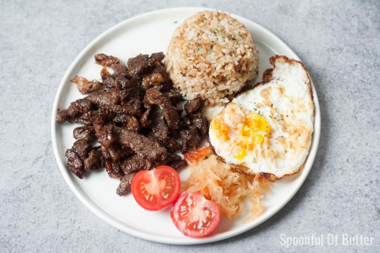

My Services
Learn more about my services

TopSilog choice1
Three Main Parts – It includes tapa (cured beef), sinangag (garlic fried rice), and itlog (fried egg).

Topsilog choice2
Quick and Easy – It's simple to prepare, making it a common choice in eateries and carinderias.

topsilog choice3
Savory and Satisfying – The combination of salty-sweet beef, garlicky rice, and runny egg is filling and flavorful